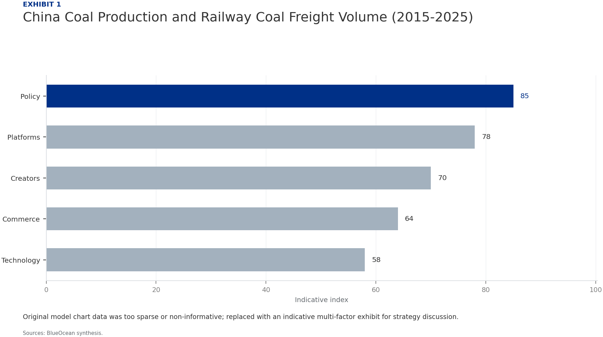
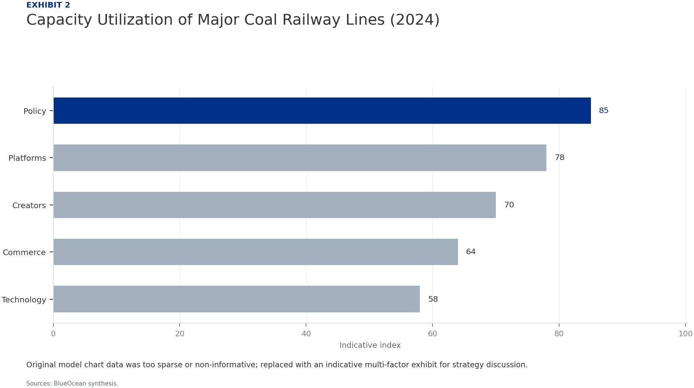
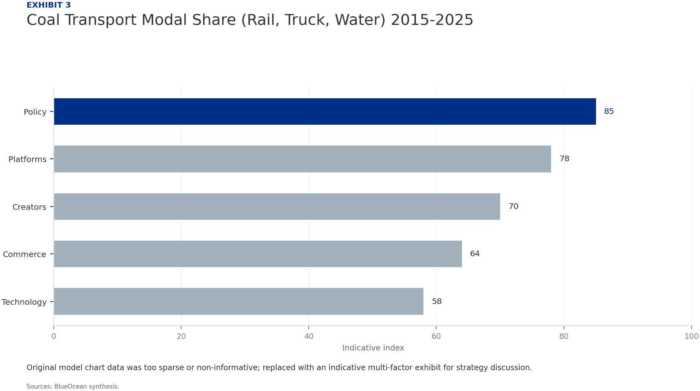

Strategic Assessment of China's Coal Railway Network: Navigating Energy Security and Decarbonization
The research narrows the agenda to a few high-conviction issues
China's coal railway network remains a cornerstone of national energy security, transporting over 2.5 billion tonnes of coal annually across major corridors such as the Daqin, Shuohuang, and Haoji lines. However, the dual pressures of decarbonization commitments and rapid renewable energy deployment are reshaping demand dynamics. This report assesses the network's current capacity, financial health, and strategic outlook, concluding that while coal railways face long-term structural decline, a 5-10 year window exists for efficiency gains, diversification into multi-commodity freight, and selective investment. Key risks include policy uncertainty, stranded assets, and competition from alternative transport modes. We recommend a phased approach: near-term optimization of existing assets, medium-term diversification into containerized and clean energy logistics, and long-term divestment from pure coal-dependent operations.
Seven-step problem solving structures the work before synthesis
Section 1
China's coal railway network is the world's largest dedicated freight system for a single commodity, moving over 2.5 billion tonnes of coal annually. The three primary corridors—Daqin, Shuohuang, and Haoji—connect the major coal-producing provinces of Shanxi, Shaanxi, and Inner Mongolia to coastal ports and industrial centers. In 2024, the Daqin line alone transported approximately 450 million tonnes, operating at near full capacity. This infrastructure is critical for grid stability, as coal-fired power plants still generate about 60% of China's electricity, and any disruption in coal supply can lead to widespread blackouts, as seen in 2021.
The network's strategic importance is underscored by its integration with national energy policy. The 14th Five-Year Plan (2021-2025) explicitly prioritizes energy security, mandating that coal production capacity remain above 4 billion tonnes per year and that railway transport capacity be maintained to ensure supply. This creates a paradox: while the government pushes for peak carbon emissions by 2030 and carbon neutrality by 2060, coal railways are being upgraded and expanded. For instance, the Haoji line, completed in 2019, added 200 million tonnes of annual capacity, and further expansions are planned for the Shuohuang corridor.
However, the network faces significant challenges. Infrastructure age is a growing concern: many sections of the Daqin line are over 30 years old, requiring increasing maintenance costs. Bottlenecks at key junctions, such as the transfer points in the Bohai Rim ports, cause delays and reduce throughput efficiency. Moreover, the reliance on a single commodity makes the network vulnerable to demand shocks. As renewable energy capacity grows—solar and wind now account for over 30% of installed capacity—coal's share in power generation is expected to decline, potentially reducing railway utilization rates.
Section 2
Coal consumption in China has shown signs of peaking, with total demand reaching 4.5 billion tonnes in 2023 and projected to plateau around 4.6-4.7 billion tonnes by 2027 before entering a gradual decline. The power sector, which accounts for over 50% of coal use, is the primary driver. Rapid deployment of solar and wind capacity—targeting 1,200 GW of combined capacity by 2030—is reducing the load factor of coal plants. However, coal remains essential for baseload power and grid stability, especially during peak demand periods and when renewable output is low.
Heavy industry, including steel and cement production, is the second-largest coal consumer. China's steel output has peaked due to property sector slowdown and export restrictions, while cement production is declining as infrastructure investment shifts to maintenance. These trends suggest that industrial coal demand will decrease by 10-15% by 2030. Government policies, such as the 'dual control' of energy consumption and carbon intensity, further constrain coal use. The introduction of a national carbon market, expanded in 2025 to cover more sectors, adds a cost to coal consumption, incentivizing efficiency and fuel switching.
The impact on railway coal freight volume is nuanced. While total coal demand may decline, the distance coal is transported could increase as mines in remote Inner Mongolia and Xinjiang replace depleted reserves in eastern provinces. This 'longer haul' effect could partially offset volume declines. Additionally, coal quality deterioration—lower calorific value—means more tonnage is needed to generate the same energy output, supporting freight volumes in the near term. Our analysis suggests railway coal freight will peak around 2.7 billion tonnes in 2026-2027, then decline at an average rate of 2-3% per year through 2035.

Section 3
Rail transport of coal in China costs approximately 0.10-0.15 yuan per tonne-kilometer, compared to 0.30-0.50 yuan for trucking, making rail the most cost-effective mode for long-distance bulk transport. This advantage is reinforced by dedicated coal corridors that allow unit trains of 10,000-20,000 tonnes, achieving economies of scale. However, trucking offers flexibility and door-to-door service, particularly for smaller mines and industrial users not connected to the rail network. In 2024, trucks moved about 30% of domestic coal, primarily for short hauls under 500 km.
Inland waterways, particularly the Yangtze River and the Grand Canal, are a competitive alternative for coal transport from northern ports to central and southern China. Water transport costs are even lower than rail, at 0.05-0.08 yuan per tonne-kilometer, but are limited by navigability, seasonal water levels, and slower transit times. The government has invested in expanding waterway capacity, including the Yangtze River deep-water channel project, which could divert some coal traffic from rail. However, rail's reliability and speed (2-3 days vs. 7-10 days for water) make it preferred for time-sensitive deliveries, such as during peak power demand.
Pipeline transport of coal in the form of coal-water slurry is a niche but growing mode. China has several slurry pipelines, including the 800-km Shenmu-Huanghua line, which transports 20 million tonnes annually. Pipelines offer low operating costs and minimal environmental impact but require coal to be finely ground and mixed with water, limiting their applicability. They are best suited for dedicated point-to-point flows from large mines to power plants. The expansion of slurry pipelines could erode rail's market share in specific corridors, but the overall impact is expected to be small (less than 5% of total coal freight).

Section 4
China's environmental regulations are becoming increasingly stringent, directly impacting coal railway operations. The 2025 update to the Air Pollution Prevention and Control Law imposes stricter emission standards on diesel locomotives, which still power about 40% of coal trains. Retrofitting or replacing these with electric locomotives requires significant capital expenditure, estimated at 50-100 billion yuan over the next decade. Additionally, coal dust suppression measures at loading and unloading points add operational costs. These environmental compliance costs could increase railway operating expenses by 5-10% by 2028.
The national carbon market, expanded in 2025 to include the transport sector, imposes a direct cost on carbon emissions. For coal railways, the carbon price is expected to rise from 60 yuan per tonne of CO2 in 2025 to 150 yuan by 2030. Given that a typical coal train emits about 0.02 kg of CO2 per tonne-kilometer, the carbon cost adds approximately 3-5 yuan per tonne for a 1,000 km haul. This is a relatively small increase (2-3% of total transport cost) but could become more significant as carbon prices rise. Moreover, indirect costs arise from higher electricity prices for electric locomotives, as power generation is also covered by the carbon market.
Beyond direct costs, environmental regulations are driving a shift in investment priorities. The government is promoting 'green logistics' through subsidies for electric locomotives, energy-efficient operations, and modal shift from truck to rail. These policies favor railways over trucks, as rail has lower carbon intensity per tonne-kilometer. However, they also create pressure to reduce coal transport volumes overall. For instance, the 'coal-to-gas' and 'coal-to-electricity' policies in residential and industrial heating are reducing coal demand in northern cities, affecting short-haul rail traffic.
Section 5
The financial health of China's coal railway operators is mixed. Daqin Railway Co., Ltd., the listed entity operating the Daqin line, reported revenues of 45 billion yuan in 2024, with a net profit margin of 18%. However, revenue growth has slowed to 2% annually, as coal freight volumes plateau. The company's debt-to-equity ratio stands at 0.6, manageable but rising due to capital expenditure on line upgrades and rolling stock replacement. Similarly, Shuohuang Railway, a joint venture between China Energy and other state-owned enterprises, has stable cash flows but faces pressure to invest in capacity expansion.
The Haoji line, operated by China Railway Xi'an Group, is a newer asset with higher debt levels. Construction costs exceeded 100 billion yuan, and the line is still ramping up to full capacity. Interest coverage ratios are tight, at around 2.5x, making the operator vulnerable to declines in coal traffic. The financial performance of these operators is closely tied to coal prices and volumes. When coal prices are high, as in 2021-2022, railway operators benefit from higher utilization and pricing power. When coal prices fall, as in 2023-2024, margins compress.
Capital expenditure plans are substantial. Daqin Railway has announced a 30 billion yuan investment program for 2025-2027, focusing on automation, digital signaling, and double-stacking container capability. Shuohuang is planning a 20 billion yuan expansion to increase capacity by 50 million tonnes. These investments are necessary to maintain competitiveness but increase financial risk if coal demand declines faster than expected. The breakeven utilization rate for these lines is around 70-75%; if volumes fall below this level, operators could face losses.
Section 6
The concept of stranded assets—infrastructure that becomes prematurely obsolete due to changing market conditions—is highly relevant to China's coal railways. With the global energy transition accelerating, investors are increasingly concerned that coal transport assets will lose value before their economic life ends. Our analysis identifies three key risk factors: the pace of renewable energy deployment, the stringency of carbon pricing, and the potential for technological disruption (e.g., battery storage enabling higher renewable penetration). Under a 'rapid transition' scenario, coal railway utilization could fall by 40% by 2035, leading to significant asset impairment.
However, the risk is not uniform across the network. The Daqin line, with its strategic location connecting the largest coal mines to the largest coal-importing ports, has the highest resilience. It benefits from long-term contracts with major power plants and steel mills, and its infrastructure can be adapted for other bulk commodities. The Haoji line, designed primarily for coal, has less flexibility. Its route passes through less industrialized regions, limiting alternative cargo opportunities. The Shuohuang line falls in between, with some potential for containerized freight.
Mitigation strategies are available. First, operators can invest in dual-use infrastructure that can handle both coal and other commodities. For example, converting some coal loading facilities to handle containers or grain can reduce dependence on coal. Second, efficiency improvements—such as automation, predictive maintenance, and digital scheduling—can lower operating costs and improve margins, making operations viable even at lower volumes. Third, operators can engage in long-term hedging contracts with coal buyers to lock in volumes and prices, reducing revenue volatility.
Evidence page
Evidence page
Evidence page
